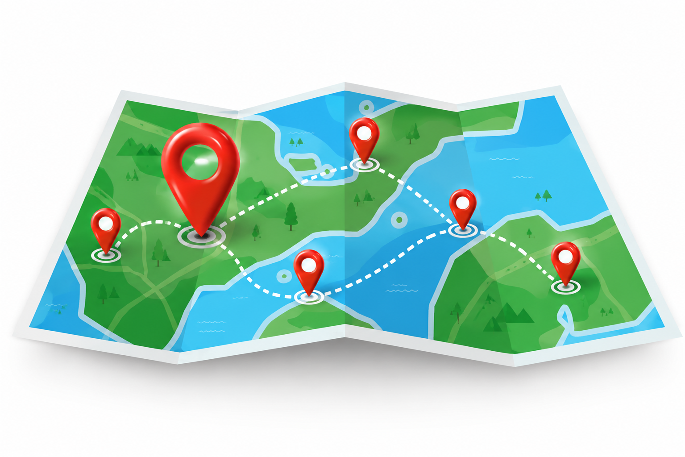

Descubre nuestras rutas y llega a tu destino con la confianza de Grupo Sierra Verde.
Elige la ruta que más te convenga y revisa de forma rápida horarios, paraderos y tarifas para planificar tu viaje con total tranquilidad.
Turismo y Corporativo
Cajamarca ↔ Granja Porcón
Paraderos:
Terminal Jr. Marañón 827
Granja Porcón
Horarios:
Cajamarca - Granja Porcón: 5:00 a.m. - 8:30 a.m. - 1:30 p.m.
Duración del viaje: 1h, 15min aprox.
Información:
Frecuencia: Servicio diario
Costo del pasaje: S/ 10.00 por tramo (S/ 20.00 ida y vuelta)
Ruta 39
Cajamarca ↔ Porcón Alto
Paraderos:
Terminal Jr. Marañón 827
C. P. Porcón Alto
Horarios:
Cajamarca - Porcón Alto: Salidas cada 10 min.
Duración del viaje: 45min aprox.
Información:
Frecuencia: Servicio diario
Costo del pasaje: S/ 4.00 por tramo (S/ 8.00 ida y vuelta)
Ruta P08
Porcón Bajo ↔ Hospital Regional de Cajamarca
Paraderos:
C. P. Porcon Bajo
Hospital Regional de Cajamarca
Horarios:
Porcon Bajo - Hospital Reg. de Cajamarca: Salidas cada 15 min.
Duración del viaje: 45min aprox.
Información:
Frecuencia: Servicio diario
Costo del pasaje: S/ 3.00 por tramo (S/ 6.00 ida y vuelta)
Ruta 70
Cajamarca ↔ Llullapuquio
Paraderos:
Terminal Jr. Marañón 827
Llullapuquio
Horarios:
Llullapuquio-Cajamarca: 6:00 a.m.
Cajamarca - Llullapuquio: 4:00 p.m.
Duración del viaje: 45min aprox.
Información:
Frecuencia: Servicio solo Lunes y Viernes
Costo del pasaje: S/ 10.00 por tramo (S/ 20.00 ida y vuelta)
Ruta 80
Cajamarca ↔ Tual
Paraderos:
Terminal Jr. Marañón 827
C. P. Tual
Horarios:
Cajamarca - Tual: Salidas cada 1hr
Duración del viaje: 1h aprox.
Información:
Frecuencia: Servicio diario
Costo del pasaje: S/ 8.00 por tramo (S/ 16.00 ida y vuelta)
Ruta 80
Cajamarca ↔ La Ramada
Paraderos:
Terminal Jr. Marañón 827
C. P. La Ramada
Horarios:
Cajamarca - La Ramada: Salidas cada 1hr
Duración del viaje: 1hr aprox.
Información:
Frecuencia: Servicio diario
Costo del pasaje: S/ 8.00 por tramo (S/ 16.00 ida y vuelta)